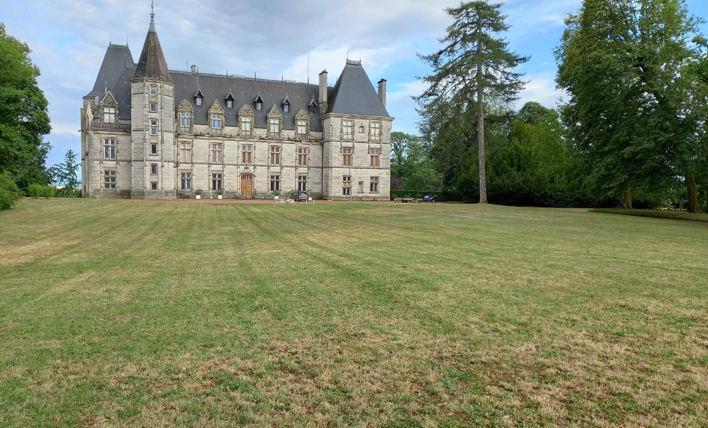
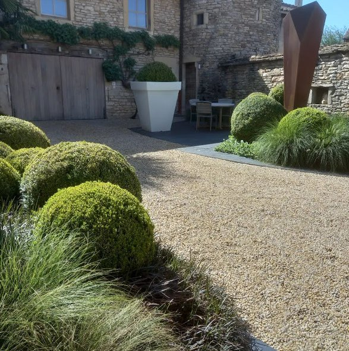
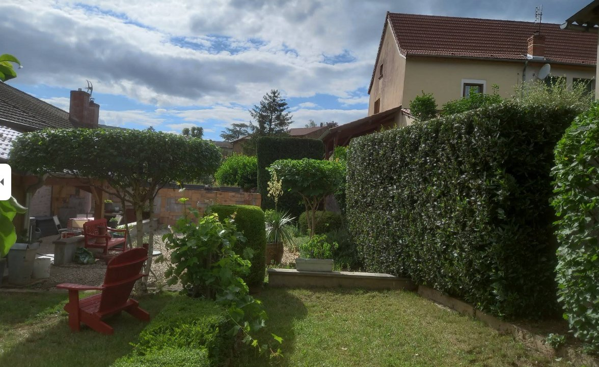
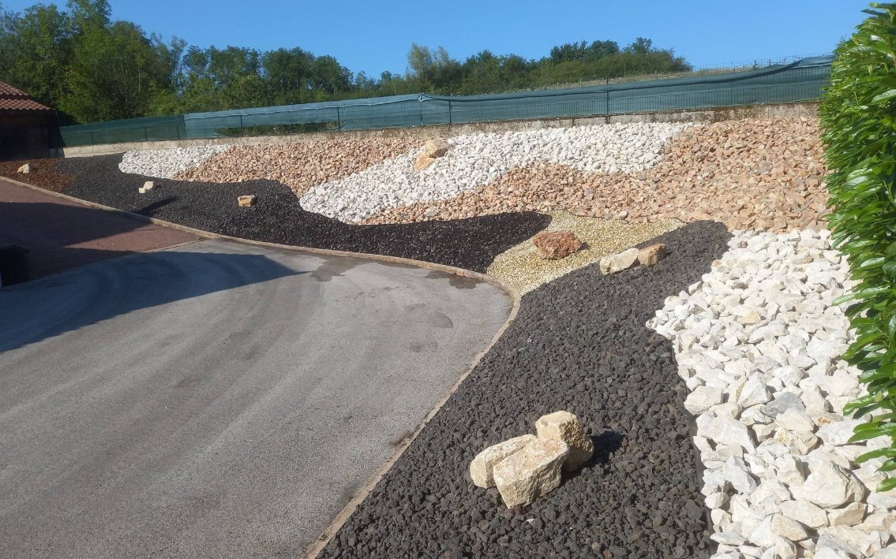

EntretienEntretien parc châteauRégion Mâconnais · 2024

TerrassesAllée gravier & topiairesCluny · 2024

EntretienJardin & taille de haiesSaint-Bonnet · 2023

CréationMassifs rocailleChauffailles · 2024
CréationCréation jardin contemporainLa Clayette · 2023
TerrassesTerrasse bois & dallageParay-le-Monial · 2024
CréationEngazonnement & plantationsCluny · 2023
FauchageFauchage prairieMatour · 2024
FauchageDébroussaillage talusRoanne · 2024
40 km
Rayon d'intervention
Votre jardin sera le prochain
Confiez-moi votre projet et rejoignez mes clients satisfaits de Saône-et-Loire.
Demander un devis gratuit